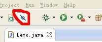
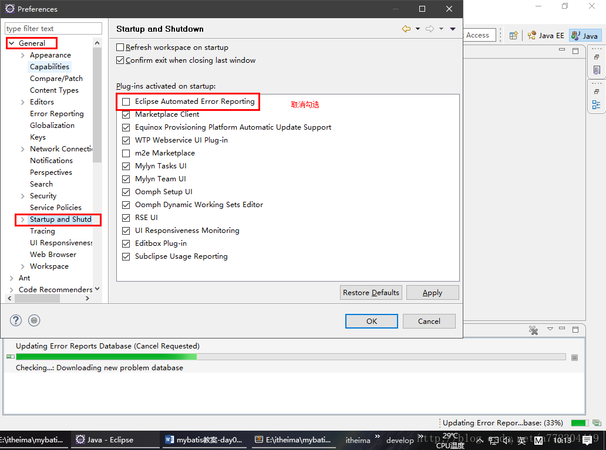

刚从事软件开发工作时，某踩坑无数的同事告诉我：软件开发嘛，一开始就是熟悉各种工具的使用和踩坑。而启动项目失败就是 newbie 的梦魇，记得第一天入职搭建项目就花了我整整一天，加班搞到晚上才将项目勉强启起来。
项目启动失败怎么办：
项目启动失败可以说是没有经验的新人的梦魇，为什么别人可以正常启动运行的项目一放到我的电脑上就会报各种神奇的错误，明明代码一样，运行环境一样。今天也来总结一波我的踩坑之旅，将那些曾经踩过的坑及解决方法总结记录下来。
其实，项目启动中的大部分的报错都是可以在网上找到解决方法的，遇到报错不要紧张、不要慌，冷静而有条理的一步步排查，总能解决的。踩的坑多了，并时常自我总结，自然就会有解决问题的方法和思路了。
Q：导入 Java 项目出现 JRE System Library(unbound)

Q：eclipse 同一 workspace 下的多个工程使用的 jdk 版本不一致
A： eclipse 可以给每个工程单独配置 jdk，修改 eclipse 工程 jdk 版本
Q： Tomcat 端口被占用
A：以管理员身份运行 cmd，执行命令，找出占用 8080 端口的进程：netstat -ano | findstr 8080，杀死该进程：taskkill /F /pid 3484
Q：tomcat启动时出现了Failed to start component [StandardEngine[Catalina].StandardHost[localhost]]
A：servlet-api.jar 包与 tomcat/lib 下的包冲突
Q： Tomcat启动异常：A child container failed during start
A：检查是否缺少 jar 包，曾经一次缺少 jsp-api.jar 包报了这个错误
Q：tomcat 启动时某个类找不到
A：该类对应的 jar 包是否有部署到 tomcat，是否改类的 .java 文件没有编译成 .class 文件
Q：The resource is not on the build path of a javascript project
A：Configure > Convert to JavaScript Project….
Q：eclipse 无法编译项目，各种配置都检查了没有问题
A：关闭当前 workspace，重新新建一个 workspace 并导入项目，然后就 ok 了。所以啊，有的时候重启大法、更换 eclipse、更换 tomcat 等简单粗暴的方法是真的可以解决不少问题的。
下面是使用 eclipse 工具踩过的坑：
Q：eclipse debug 不起作用：突然，eclipse工具无论怎么设置断点，debug不起作用。
A：关闭 skip all breakpoints 即可，如图：
Q：eclipse出现updating error reports database一直运行解决方案
A：
Q：Eclipse的卡顿、启动慢、一直 building
A：这篇博文写的不错：Eclipse的设置、调优、使用（解决启动卡顿等问题）
神奇的 Maven，你不想了解下么
大神牛逼，写的通俗易懂，直接贴过来，跟着刚哥深入学maven（通俗易懂）
maven 镜像配置的两种方式：
- setting.xml 中配置，对所有 maven 工程有效；
- pom.xml 中配置，只对当前工程有效。
工作项目中一般会在 pom.xml 里配置多个环境，如：
1 | <profiles> |
SysConst.properties 文件如下：
1 | EnvID=${EnvID} |
在资源文件(SysConst.properties)中放置 pom.xml 预先设置的变量，在执行 mvn package 时就会自动将变量替换为真实值。
日常报错总结：
ERROR：Unsupported major.minor version 52.0
Solution：执行代码的 jdk 版本 低于 编译的 jdk 版本
ERROR：Excel 导入（POI）异常 Cannot get a text value from a numeric cell
Solution：试图从一个数字类型的Cell读取出一个字符串并写入数据库时，就会出现Cannot get a text value from a numeric cell的异常错误。
ERROR：java.sql.SQLException: ORA-01830: 日期格式图片在转换整个输入字符串之前结束:
Solution：如果程序或者数据库报错信息这个的话，一定是其中一个字段或者属性的值出现类似于 2005-10-01 12:01:01.0’ 后面多了一个 .0 这个格式。解决方法就是干掉后面的 .0
参见文章如下：
「如何在properties文件中获取maven的 pom.xml 的键值」
「使用Eclipse新建一个Maven Project时settings配置的mirror仓库地址无法覆盖默认地址导致打包失败」